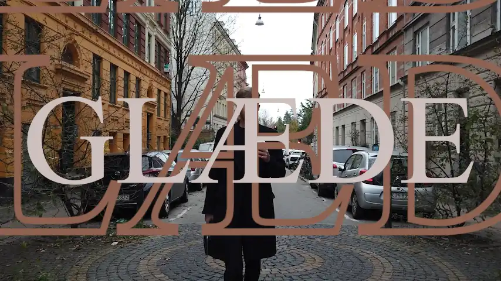
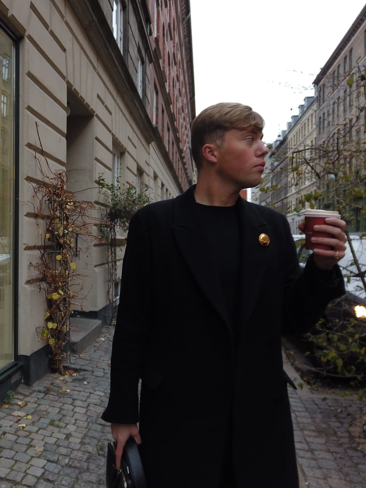
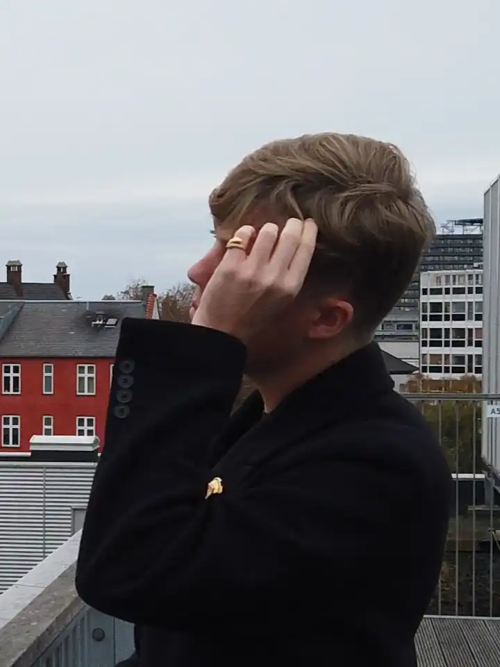
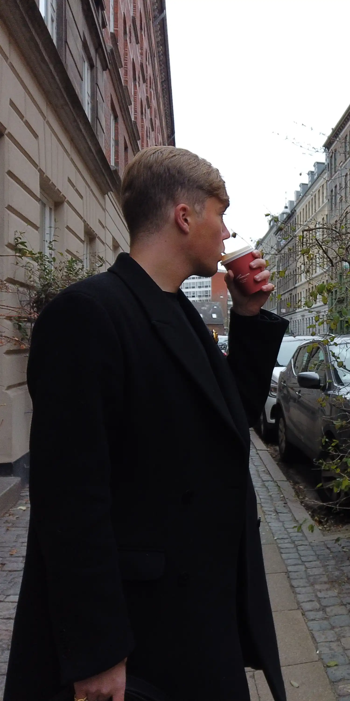

Nick Albér
Denne side er et udkast-portfolie omkring Nick Albér. Der lægges fokus på interviewet med ham, hvor der dykkes ned i hans passion for det sociale.
"De gode relationer giver mig glæde"


Introduktion
Nick Albér er 22 år gammel, som er passioneret i det sociale. Det vil sige, at han elsker at socialisere, snakke og hygge sig med sine venner. Albér mener, at det er vigtigt at huske at holde sine relationer/kontakter vedlige, da man hurtig kan glide fra hinanden, på grund af f.eks. travle hverdage. Et venskab/relation i følge Albér er, når begge parter vil venskabet og respekterer hinanden.


"Det vil i hvert fald være synd ikke, at have nogen her at dele livet med."